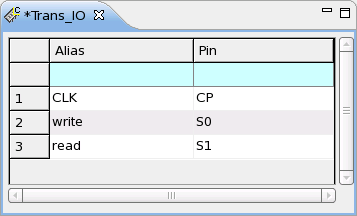
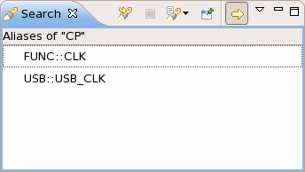

Alias Set Editor
This editor shows the content of pin alias sets including the package pin names and pin aliases. The following figure displays an alias set named Trans_IO.

With this editor, you can create, edit, copy, paste, and delete pin alias sets. Copying, pasting, and deleting the pin alias sets are similar to how you work with pin groups. See below for information on creating and editing pin alias sets.
Creating a pin alias set
- In the Test Program Explorer view, right-click Alias Sets and choose
New.
The New Alias window opens.
- Enter the alias set name in the New Alias text box and click OK.
Editing an alias set
- In the Alias Set Editor, open the alias set you want to edit. For a new alias set, the editable region is empty.
- In this editor, enter the package pin name and the alias for that pin:
- In the Alias column, enter the alias for this pin.
- In the Pin column, enter the package pin name defined in the Pin Setting Editors.
- After you have finished defining the first pair of alias and its related package pin name, press the tab key. A new line is created.
- Continue to enter the alias for the second package pin names.
- When you finish entering the aliases for your desired pins, apply the data and save the pin configuration file.
Displaying all aliases for one pin
When there are aliases for a pin in one or more alias sets, you can display all the aliases for this pin: In the Alias Set Editor, right-click the line number of the pin, and choose Aliases per Pin.
The Search view opens displaying all the aliases for this pin. The format of each line in this view is:
<alias_set_name>::<alias_name>

Functional changes
- Introduced in SmarTest 6.5.2